![Screenshot of the Meddbase Questionnaire Builder interface with five main sections numbered for reference. Section 1 (purple) shows the Questionnaire Builder title, Section 2 (yellow) displays toolbar options such as New Clinical Form, Open, Save, and Print. Section 3 (red) lists the file structure with 'NewQuestionnaire.xml' visible. Section 4 (green) indicates the area for selected controls, labeled '0 controls selected.' Section 5 (blue) provides the main workspace area for building the questionnaire.](images/clinical-form-builder1.png)
In Meddbase, forms are a vital aspect of any consultation or patient experience. From simple to complex, it is important you are able to record vital information to help provide the best level of care.
The Meddbase Form Builder is a multipurpose tool that allows you to curate your own bespoke Clinical Form and Questionnaires, with various controls to support your team in getting the correct and appropriate information.
A user conducting a Consultation is presented with a Clinical Form, which is a set of various types of fields, e.g Free Text fields or Dropdown menus and more, allowing the user to capture specific information regarding their encounter with the patient. This information will then be updated in the patient's Medical Record.
The Clinical Form Builder allows you to curate Clinical Forms with the option to enable mandatory fields. This is available via the following link: form-builder.meddbase.com
WARNING
Clinical Forms can only be accessed from within a Consultation.
For guidance on how to use the Questionnaire Builder, please refer to How to use the Questionnaire Builder
This article is designed to guide you through the process of accessing the Clinical Form Builder as well as creating, amending and previewing Clinical Forms within the platform.
This guide will walk you through the entire process, from the initial creation of a Clinical Form to exporting and requesting a Clinical Form import into your chamber.
This article is split into the following sections:
The Form Builder is divided into 5 core sections:
 - Cut selected control to clipboard.
- Cut selected control to clipboard.When you open the Clinical Form Builder, a pop-up wizard will appear to guide you through using the interface. Small dialog boxes will guide you through core functionality of the Builder by pressing next or previous. You may exit out of the wizard at any time by pressing the X located in the upper right corner of the dialog box.
1. Press the ⋮ button next to the section to begin adding controls to your form. Clicking Add Inside will add controls inside of the form.
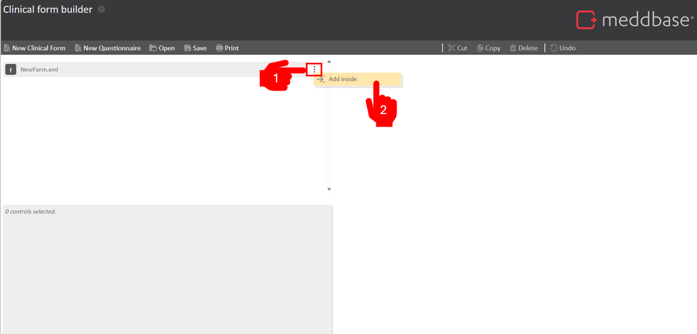
2. A pop-up window will appear. On the left-hand side, you can select the type of control you would like to add. The control's function is explained on the top right-hand side, in italic font.
Controls may be question controls such as buttons, notes and dates or to organise questions, such as groups, tables and panels.
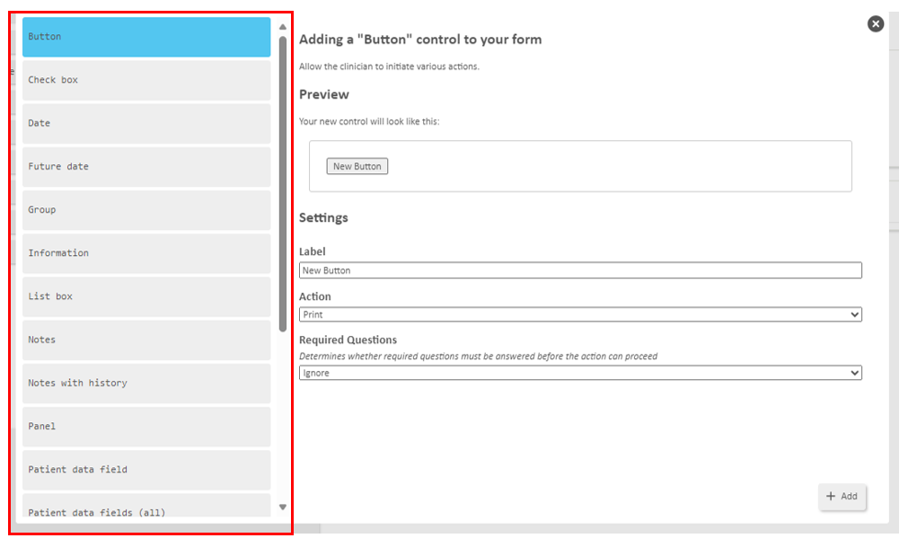
3. Customise your control settings on the right-hand side of the pop-up window.
Depending on the control added, you are able to customise various aspects of the control, from name to assigning a unique key to the width of the control. Not all controls will have the same customisation settings. See Types of Control Settings.
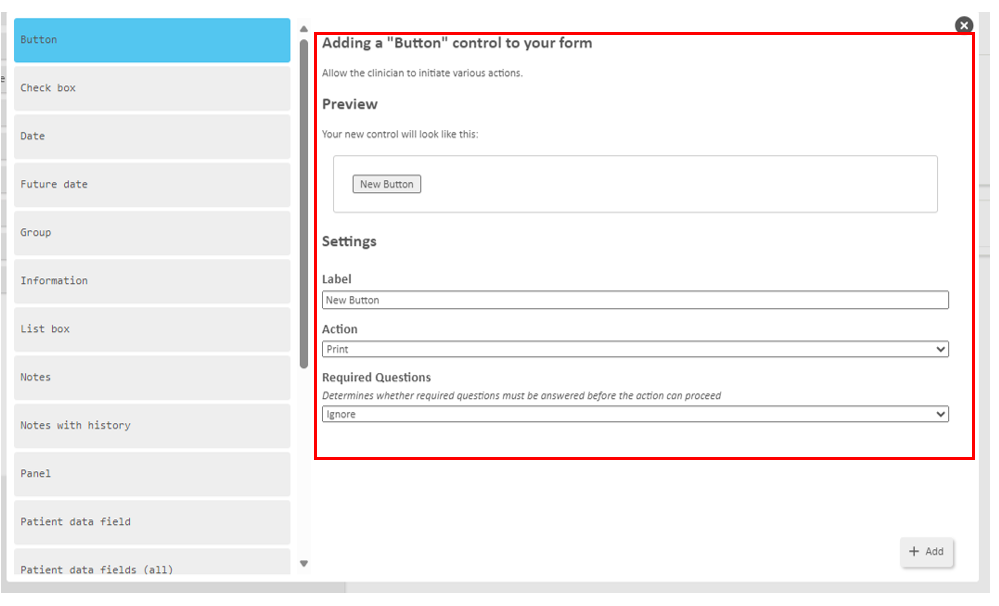
Top tip: It is good practice to organise controls of a similar nature into groups. This helps to divide the clinical form into clear, distinct segments that are aligned to sections of the patient's medical record.
4. Continue to add controls using Add after or Add before. If inserting a control inside of a group, table or panel, Add inside will also appear.
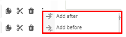
To read more about the controls available and their functions, see Types of Controls.
The video below is a demonstration of adding different controls into your Clinical Form. Highlighting the different options to Add Inside, Add After, Add Before.
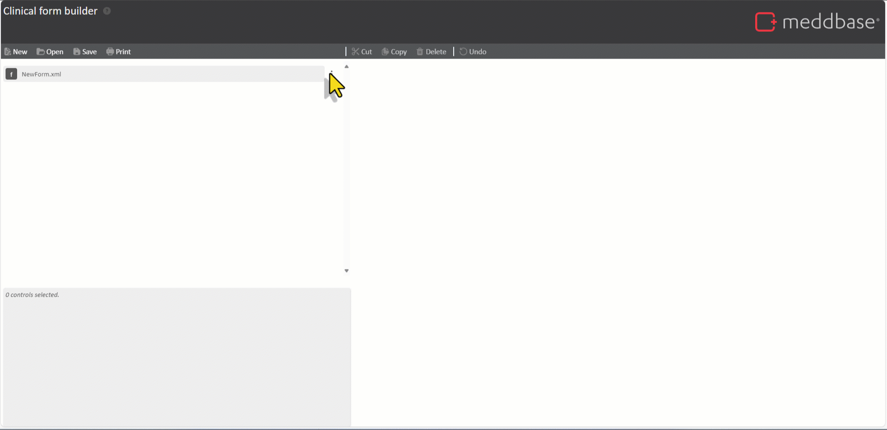
Now you have multiple controls, within groups, tables or panels, you can copy, cut and paste these for a faster workflow. Copy or cut controls to your clip board to paste inside, after or before.
The control/s will now be pasted into your Clinical Form and you can begin to amend their settings.
Top tip: This is useful when needing to create multiple controls in fewer clicks, such as copying large groups with additional organisational controls.
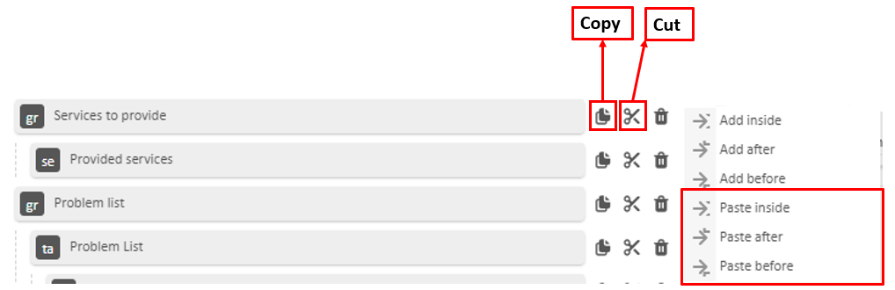
Controls within a form can be reorganised at any stage. You can reorder the order of elements on the form and within groups, tables and panels.
The video below demonstrates how to reorder controls in a group and in a form. Watch the Preview panel to see real time updates to the structure of the form.
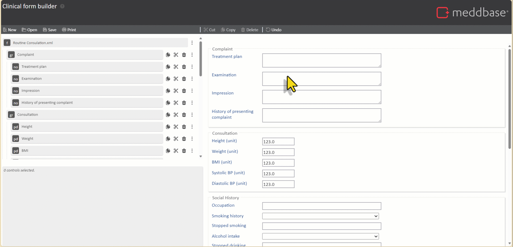
After adding controls, you can further make individual adjustments to control settings using the panel located at the bottom left-hand side of the page. All settings initially set during control creation can be modified at any point using the following process:
Changes are automatically updated and displayed in the Preview Panel in real time.
The video below demonstrates how to change the control settings in both the settings panel and in a large window. Watch the Preview panel to see real time updates to the controls.
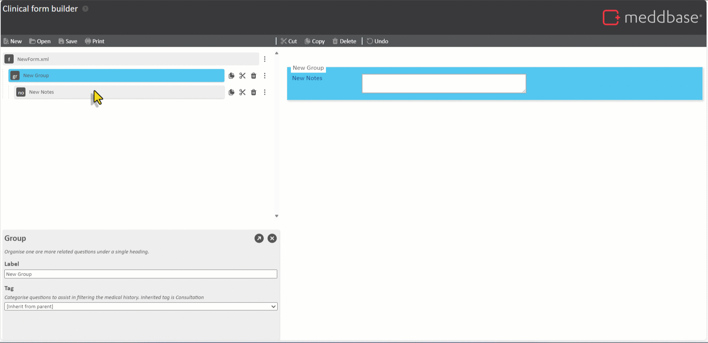
Required questions allow you to ensure clinicians are answering important questions. You will need to add a button to help enforce this. Buttons have a setting which allows you to determine whether Required Questions must be answered before the action can proceed.
This could be a discharge button, with a discharge action with a strictrequired question setting. This means in order for the clinician to discharge the patient, they must answer all questions marked as required.
The video below demonstrates how to enable required questions and enforce them using a button.
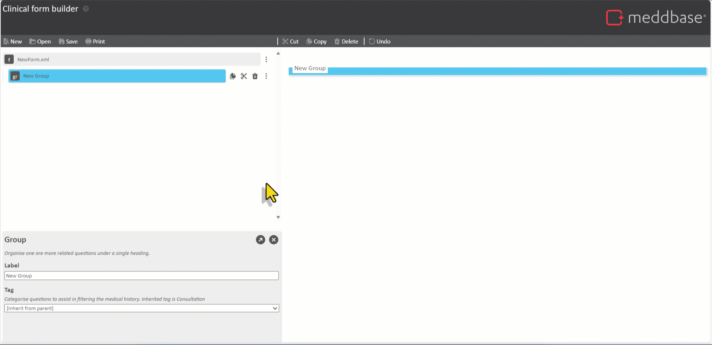
There are two ways you can preview your form. This is useful if you want to see how this will look within a consultation.
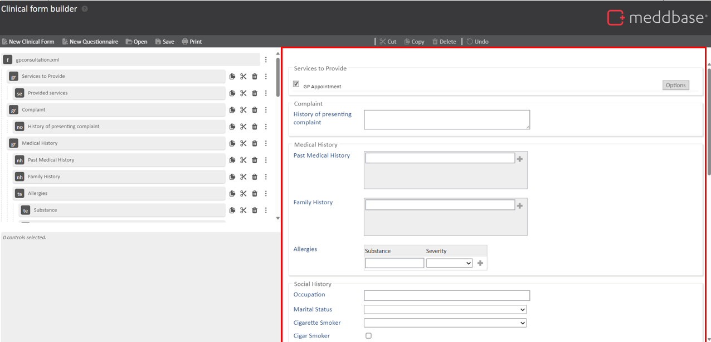
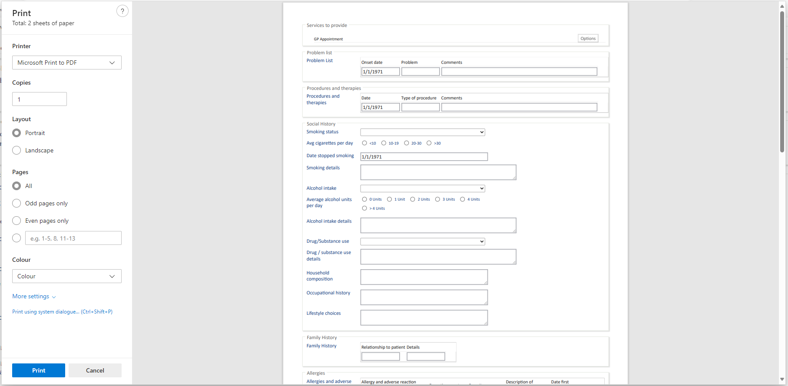
Now you have created your form, you will need to export your form out of the Clinical Form Builder and into a file that will be shared with your CAM/Support. From there, your form will be uploaded this into your Chamber ready for you to use.
To do this, you need to:
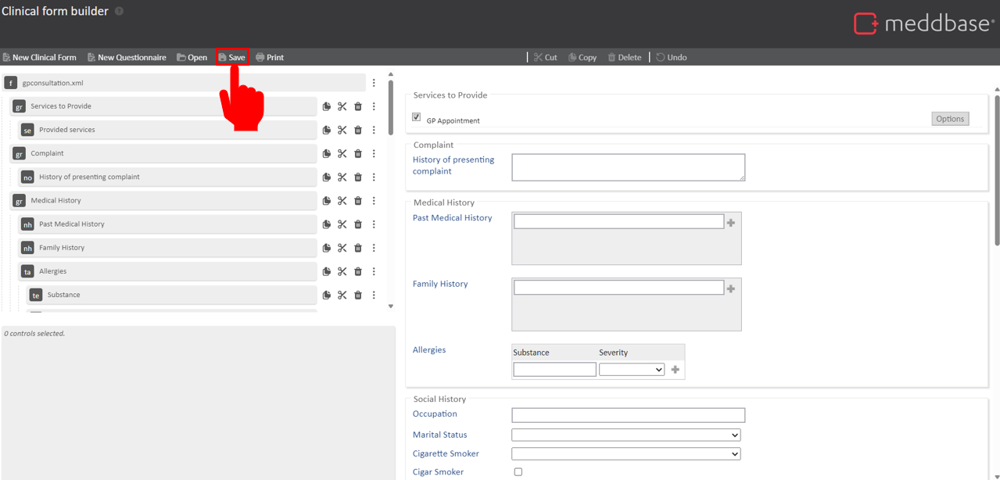
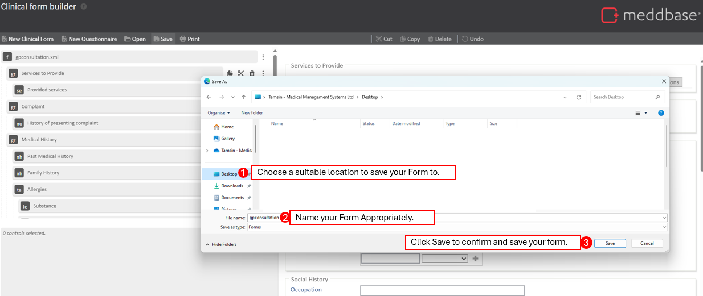
SNOMED (CT) - (Systematised Nomenclature of Medicine Clinical Terms) is a standard clinical terminology used in healthcare. It assigns unique numerical codes to clinical concepts, aiding precise identification.
Controls - Customisable input fields, allowing users to define specific data entry points tailored to clinical documentation requirements.
Top tip: Most control settings come with a description either above the text entry box or when your mouse hovers over an option.
| Control type | Description | Settings |
Button
| A button allows the clinician to initiate a specific action. Actions are predefined in a drop down list, that will trigger a function within Meddbase. To read more about what actions are available and their function, please refer to this article |
|
Check box
| A tick box for a “yes” or “no” question. |
|
Date | Record a historical date. Abbreviations such as '1w' will be interpreted as counting backwards from today's date. |
|
Future date
| Record a future date. Abbreviations such as '1w' will be interpreted as counting backwards from today's date. Exemplar date is pre-loaded to demonstrate what the field will show. |
|
Group | Organise one ore more related questions under a single heading. Best practice to group sections of the form for structure and uniformity. |
|
Information
| Display information to advise the clinician when completing the form. |
|
List box
| Ask a question with a known list of possible answers. This is a good choice when there are a large number of options. |
|
Notes
| Useful for when recording a long observation that requires more than 1 line of text. |
|
Notes with history
| Record multiple observations under one label. This will document in the patient's medical history. |
|
Panel
| Organise questions in a column for a side by side view. Panels are used to create a side-by-side view. They should be used in pairs and the width shouldn't exceed 400 to account for smaller screens. |
|
Patient data field
| View and/or record values for a single specific named patient data field. |
|
Patient data field (all)
| View and/or record values for all patient data fields. | No settings for this control |
Prescriptions
| View and/or create prescriptions. | No settings for this control |
Provided services | View and/or modify services provided in the current appointment. Exemplar shows GP appointment, this will change in the actual form when in use to match the service name. | No settings for this control |
Radio buttons
| Ask a question with a known list of possible answers. This is a good choice when there are only a few options. |
|
Table | Organise one or more questions that must all be answered together into a structured record. Record more than one structured records under a single label. Data would need to be "pushed" to the record by pressing the "+" |
Only the following controls can be added inside of a table:
|
Text box | Record brief observations that only need to span one line. |
|
| Control setting | Description |
| Label | Control title, alter the name of the control |
| Action (Button specific control) | Output of pressing a button, predefined actions |
| Code | A unique numerical number OR numeric SNOMED concept ID relating to the control - Find SNOMED codes here: |
| Key | Unique identifier for controls with the same label Leave this blank unless you need to have the same label on more than one control. |
| Global tick box | This should be ticked when the answer to a question carries forward from one episode to the next. NB: global fields should be used with caution and only for data which does not change often |
| Required tick box | This should be ticked when a question must be answered (will need a button to enforce this) |
| Tag | Categorise questions to assist in filtering the medical history. Controls can be aligned to specific sections of the Patient's medical history. These tags can then interact with additional functionality within Meddbase, such as Allergies. Inherited tag is Consultation |
| Information text (Information specific control) | Body of Information in the clinical form. |
| Width | Width of the control in pixels. Leave blank to use the default width. |
| Answers (List box specific control) | Add each possible answer to a control and assign a unique code to each one. |
| Options (Radio button specific control) | Add each possible option to a control and assign a unique code to each one. |
Clinical forms in Meddbase support advanced features to enhance data collection and decision-making. These include:
If you wish to add dynamic fields or binding to your forms, you need to: